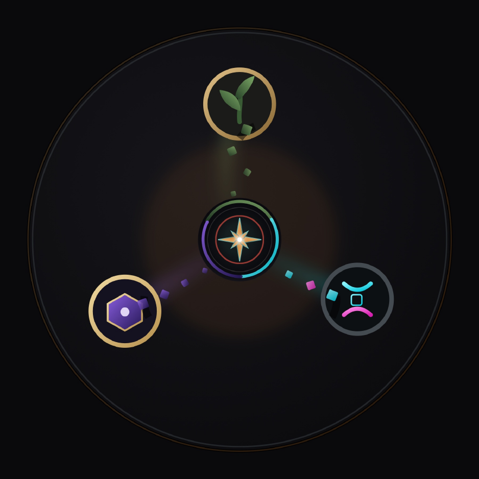

Specter Realms · Colony Protocol · Pack 4
Colony Protocol: Liminal
Planetfall kitchen-sink. Reunite Verdant, Elysian, and Influx systems on a lived world: settle, resist, and cross the threshold.
Bring what you learned. Or arrive cold.
What this is
Pack 4 of Colony Protocol: not another classroom void, not the ship. A lived world where mechanical, magic, and genetics/digital systems reunite under colonial settle pressure. Public release gated after ≥ Elysian. Quests still never hard-gate.
Series order · V → E → I → L
Recommended order is a guide, not a lock. Skippers miss teaching and lore pacing. Liminal includes the systems.
Install (Prism)
Prism → Add Instance → Download from CurseForge (or Import zip from this pack’s CF page) Allocate 6–8 GB RAM · launch NeoForge profile
Dev loop (maintainers): make serve then Prism pre-launch pulls http://localhost:8080/pack.toml.